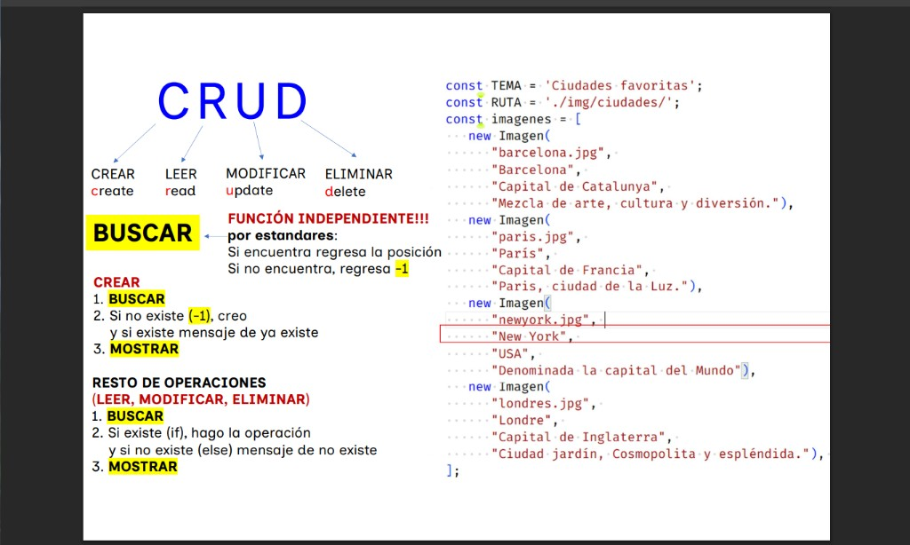
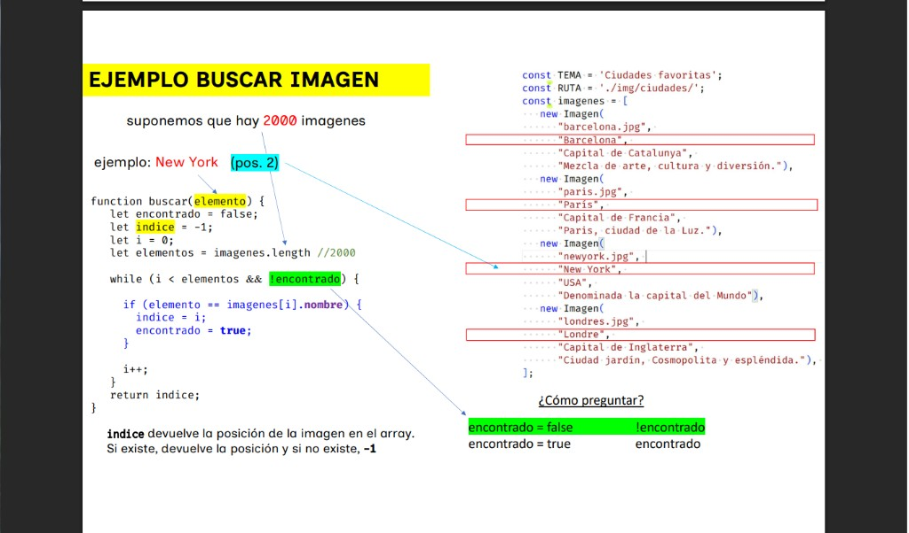

L'idée générale
Imagine un album photo sur ton écran. Tu peux faire défiler les photos avec les boutons « Retroceder » (précédent) et « Avanzar » (suivant). C'est le carrusel (carrousel).
Mais ce n'est pas tout : tu dois aussi pouvoir gérer la liste des éléments (villes, animes, etc.). C'est là qu'intervient le CRUD.
CRUD, c'est quoi ?
CRUD résume 4 actions qu'on fait souvent avec une liste :
| Lettre | Mot anglais | En français | Exemple |
|---|---|---|---|
| C | Create | Créer | Ajouter une nouvelle ville à l'album |
| R | Read | Lire / Afficher | Voir la liste ou une ville en particulier |
| U | Update | Modifier | Changer la description de Paris |
| D | Delete | Supprimer | Enlever Londres de la liste |
Sur la maquette du cours, les boutons correspondent à :
- AGREGAR → Créer (ajouter)
- DEVOLVER → Lire (afficher / retrouver)
- MODIFICAR DATOS → Modifier
- ELIMINAR → Supprimer
La liste : où sont stockées les infos ?
Toutes les villes (ou animes) sont dans une liste — un peu comme un carnet où chaque page = une fiche.
Chaque fiche contient par exemple : le nom, une photo, une petite description.
Chaque élément a une position (un numéro) : Barcelona → 0, París → 1, New York → 2, etc. Le carrusel utilise ces positions pour savoir quelle fiche afficher.
La fonction BUSCAR
Avant de créer, modifier ou supprimer, il faut trouver l'élément dans la liste.
Analogie : tu as un classeur avec 2000 fiches. Quelqu'un te dit : « Trouve-moi Barcelona ». Tu ouvres chaque fiche une par une jusqu'à trouver le bon nom.
- Elle part du début de la liste
- Elle compare chaque nom avec celui qu'on cherche
- Si elle trouve → elle renvoie la position (ex. : 0 pour Barcelona)
- Si elle ne trouve pas → elle renvoie -1 (introuvable)
C'est une fonction indépendante : elle fait une seule chose (chercher) et toutes les autres opérations s'en servent.
Logique des opérations
- CRÉER → chercher → si -1, ajouter / sinon « existe déjà »
- MODIFIER → chercher → si trouvé, modifier / sinon « n'existe pas »
- SUPPRIMER → chercher → si trouvé, supprimer / sinon « n'existe pas »
Explicación detallada — diapositivas del curso
Diapositiva 1 — CRUD: la lógica general

¿Qué es CRUD?
Son las 4 acciones para gestionar una lista de datos:
| Letra | Español | Qué hace | En tu proyecto |
|---|---|---|---|
| C | Crear | Añadir algo nuevo | agregar |
| R | Leer | Ver o recuperar un dato | devolver |
| U | Modificar | Cambiar datos existentes | modificar |
| D | Eliminar | Quitar algo de la lista | eliminar |
La regla de oro: siempre BUSCAR primero
La profe insiste en que buscar es una función INDEPENDIENTE. Solo hace una cosa: encontrar un elemento por su nombre.
- Si existe → devuelve la posición (0, 1, 2…)
- Si no existe → devuelve -1
Cómo se usa buscar en cada operación
CREAR (Agregar)
- BUSCAR
- Si devuelve -1 → crear
Si ya existe → mensaje «ya existe» - MOSTRAR (actualizar pantalla)
LEER, MODIFICAR, ELIMINAR
- BUSCAR
- Si existe → hacer la operación
Si no existe → mensaje «no existe» - MOSTRAR (actualizar pantalla)
Ejemplo en tu crud.js — función agregar:
if (posicion === -1) { // no existe → se puede crear
lista.push(nuevaImagen);
resultado.mensaje = "Anime agregado correctamente.";
} else if (posicion >= 0) { // ya existe
resultado.mensaje = "Ese anime ya existe.";
}Diapositiva 2 — La función buscar paso a paso

Los datos (array imagenes)
En el ejemplo del curso hay un array con ciudades. Cada elemento tiene una posición:
| Posición | Nombre |
|---|---|
| 0 | Barcelona |
| 1 | París |
| 2 | New York |
| 3 | Londre |
El carrusel usa esas posiciones para saber qué foto mostrar. En el ejemplo de la diapositiva: New York está en la posición 2.
Las variables al empezar (ejemplo: buscar «New York»)
encontrado = false→ «¿ya lo encontré?» Empieza en NOindice = -1→ «posición». Empieza en «no existe»i = 0→ contador, empieza en 0
El bucle while
while (i < imagenes.length && !encontrado)Significa: «sigue mientras no hayas recorrido toda la lista Y no lo hayas encontrado».
¿Cómo preguntar? (caja verde de la diapositiva)
!encontrado=encontrado === falseencontrado(sin !) =encontrado === true
Recorrido del bucle buscando «New York»
| Vuelta | i | Compara | ¿Coincide? |
|---|---|---|---|
| 1 | 0 | Barcelona | No → i++ |
| 2 | 1 | París | No → i++ |
| 3 | 2 | New York | ¡Sí! → indice=2, encontrado=true |
El bucle para porque encontrado pasa a true. La función devuelve 2.
Si buscas «Madrid» → recorre todo, nunca coincide → devuelve -1.
Tu código en crud.js (igual que la diapositiva)
const buscar = (lista, elemento) => {
let encontrado = false;
let indice = -1;
let i = 0;
while (i < lista.length && !encontrado) {
if (lista[i].nombre === elemento) {
indice = i;
encontrado = true;
}
i++;
}
return indice; // posición o -1
}La profe usa == y tú usas ===. El funcionamiento es el mismo.
Cómo encaja todo en tu proyecto
Ejemplo — Usuario busca «Naruto»
- Escribe «Naruto» y pulsa Buscar
main()lee el nombre y validabuscar(imagenes, "Naruto")→ devuelve la posición (ej. 9)main("slide", 9)→ el carrusel muestra Naruto
Ejemplo — Admin elimina «Death Note»
- Escribe «Death Note» y pulsa Eliminar
buscar()→ encuentra la posicióneliminar()→ quita ese elemento del arraymain("slide", ...)→ actualiza el carrusel
En una frase: buscar recorre la lista como un clasificador: si encuentra el nombre devuelve su posición; si no, devuelve -1. Todas las operaciones CRUD pasan por ahí antes de crear, leer, modificar o eliminar.
Flujo programación estructurada (lo que pide la profe)
Botón del usuario
↓
main() → lee y valida los datos del formulario
↓
buscar() / agregar() / etc. → reciben parámetros, devuelven return
↓
main() → guarda el resultado en una variable
↓
main() → muestra el mensaje en pantalla
↓
main("slide", indice) → MOSTRAR el carrusel actualizado
Le carrusel + le CRUD
Partie 1 — Le carrusel : afficher une image à la fois, boutons précédent / suivant, nom + description.
Partie 2 — Le CRUD : boutons pour gérer la liste, la fonction buscar, les fonctions créer / modifier / supprimer, et rafraîchir l'affichage après chaque action.
Organiser le projet en 2 pages
L'idée : page utilisateur + page administrateur
Au lieu de mettre tous les boutons CRUD sur une seule page, on peut séparer le projet en deux pages. C'est une approche plus professionnelle, proche des vrais sites web.
- Page utilisateur (
index.html) → le carrusel + quelques boutons CRUD - Page administrateur (
admin.html) → tous les boutons CRUD
Comme dans la vraie vie : sur Netflix, tu regardes des films (comme ton carrusel), mais tu ne peux pas supprimer la base de données. Seul l'administrateur du site peut modifier ou supprimer du contenu.
Quels boutons pour les utilisateurs ?
Sur la page publique, on ne montre pas tout. Voici ce qui est recommandé :
| Bouton | Utilisateur | Pourquoi |
|---|---|---|
| Carrusel (Avanzar / Retroceder) | ✅ Oui | C'est le cœur de la page : regarder et naviguer |
| Búsqueda (chercher) | ✅ Oui | L'utilisateur tape un nom et le carrusel va directement à cette fiche |
| Agregar (ajouter) | ⚠️ Optionnel | OK si l'utilisateur peut proposer un nouvel anime ou une nouvelle ville |
| Modificar | ❌ Non | Risque : n'importe qui pourrait changer les infos de quelqu'un d'autre |
| Eliminar | ❌ Non | Trop dangereux pour un visiteur normal |
En résumé pour l'utilisateur :
- Indispensable : le carrusel + la recherche
- Optionnel : ajouter (si tu veux que les visiteurs participent)
- À éviter : modifier et supprimer
Note : buscar n'est pas forcément un bouton visible. C'est souvent une fonction invisible que le code utilise en interne. Ce que l'utilisateur voit, c'est plutôt un champ de recherche + un bouton « Chercher ».
Page administrateur — tous les boutons
L'administrateur gère la liste. Il a besoin de tout :
| Bouton | Rôle |
|---|---|
| Agregar | Ajouter une nouvelle ville ou un nouvel anime |
| Devolver / Búsqueda | Retrouver une fiche par son nom |
| Modificar | Corriger une description, changer une image |
| Eliminar | Supprimer une fiche qui ne doit plus être là |
Sur cette page, tu peux avoir le carrusel (pour voir le résultat) ou une liste + formulaires — les deux marchent pour l'exercice.
Schéma des deux pages
Page utilisateur (index)
- 🖼️ Carrusel (photos + navigation)
- 🔍 Recherche : « Trouver Naruto »
- ➕ Ajouter (optionnel)
- ❌ Pas de Modifier
- ❌ Pas de Supprimer
Page admin (admin.html)
- ➕ Agregar
- 🔍 Devolver / Búsqueda
- ✏️ Modificar
- 🗑️ Eliminar
- + Carrusel ou liste pour vérifier
Comment ça marche ensemble ?
Les deux pages partagent la même liste imagenes (le carnet). C'est le même carnet ; seuls les boutons visibles changent.
Exemple — utilisateur cherche « One Piece » :
- Il tape « One Piece » dans le champ de recherche
- Le code appelle
buscar("One Piece")→ retourne la position (ex. : 14) - Le carrusel affiche directement ce slide
Exemple — admin supprime « Death Note » :
- Il tape « Death Note » et clique sur Eliminar
- Le code appelle
buscar("Death Note") - Si trouvé →
eliminarenlève la fiche - Le carrusel se met à jour
Exemple — utilisateur essaie d'ajouter « Naruto » alors qu'il existe déjà :
buscar("Naruto")→ trouvé (pas -1)- Message : « Cet anime existe déjà ! »
Ce que la prof veut voir dans le code
Même avec 2 pages, il faut toujours ces fonctions :
- buscar — fonction indépendante (comme sur la slide du cours)
- agregar — avec la logique « si -1, ajouter / sinon message »
- modificar — avec la logique « si trouvé, modifier / sinon message »
- eliminar — avec la logique « si trouvé, supprimer / sinon message »
- devolver — retourner une fiche trouvée (c'est le « Lire » du CRUD)
En une phrase : Tu fais un site en deux parties — une page publique où les gens regardent le carrusel et cherchent (et éventuellement ajoutent), et une page admin où le gestionnaire peut tout faire, en passant toujours par buscar avant chaque action.
Exemples de code
1. La liste (le « carnet »)
const imagenes = [
new Imagen("img/1.jpg", "Naruto", "Shonen", "Un ninja qui veut devenir le plus fort."),
new Imagen("img/2.jpg", "One Piece", "Aventure", "Des pirates à la recherche d'un trésor."),
new Imagen("img/3.jpg", "Death Note", "Thriller", "Un carnet qui peut tuer des gens.")
];| Position | Nom |
|---|---|
| 0 | Naruto |
| 1 | One Piece |
| 2 | Death Note |
2. La fonction buscar
function buscar(elemento) {
let encontrado = false;
let indice = -1;
let i = 0;
while (i < imagenes.length && !encontrado) {
if (imagenes[i].nombre === elemento) {
indice = i;
encontrado = true;
}
i++;
}
return indice;
}Exemples d'utilisation :
buscar("Naruto"); // → 0 (trouvé en position 0)
buscar("One Piece"); // → 1 (trouvé en position 1)
buscar("Pokémon"); // → -1 (pas dans la liste)3. CRÉER — agregar (Ajouter)
function agregar(nuevaImagen) {
let posicion = buscar(nuevaImagen.nombre);
if (posicion === -1) {
imagenes.push(nuevaImagen);
alert("Anime ajouté avec succès !");
} else {
alert("Cet anime existe déjà !");
}
}Exemple A — ça marche :
agregar(new Imagen("img/4.jpg", "Dragon Ball Z", "Shonen", "Des combats épiques."));
// La liste passe de 3 à 4 élémentsExemple B — ça ne marche pas :
agregar(new Imagen("img/x.jpg", "Naruto", "Shonen", "Encore Naruto..."));
// → Message : "Cet anime existe déjà !"
// → La liste ne change pas4. LIRE — devolver (Afficher / Retrouver)
function devolver(nombre) {
let posicion = buscar(nombre);
if (posicion === -1) {
alert("Cet anime n'existe pas !");
return null;
}
return imagenes[posicion];
}Exemple A — trouvé :
let anime = devolver("One Piece");
// On récupère l'objet One Piece
// On peut afficher : anime.nombre, anime.descripcion, etc.Exemple B — pas trouvé :
devolver("Pokémon");
// → Message : "Cet anime n'existe pas !"
// → Retourne null5. MODIFIER — modificar
function modificar(nombre, nuevaDescripcion) {
let posicion = buscar(nombre);
if (posicion === -1) {
alert("Cet anime n'existe pas !");
return;
}
imagenes[posicion].descripcion = nuevaDescripcion;
alert("Anime modifié !");
}Exemple A — ça marche :
modificar("Naruto", "Le ninja le plus connu du monde.");
// Avant : "Un ninja qui veut devenir le plus fort."
// Après : "Le ninja le plus connu du monde."Exemple B — ça ne marche pas :
modificar("Pokémon", "Une nouvelle description...");
// → Message : "Cet anime n'existe pas !"6. SUPPRIMER — eliminar
function eliminar(nombre) {
let posicion = buscar(nombre);
if (posicion === -1) {
alert("Cet anime n'existe pas !");
return;
}
imagenes.splice(posicion, 1);
alert("Anime supprimé !");
}Exemple A — ça marche :
eliminar("Death Note");
// Avant : [Naruto, One Piece, Death Note]
// Après : [Naruto, One Piece]
// One Piece passe de la position 2 à la position 1Exemple B — ça ne marche pas :
eliminar("Pokémon");
// → Message : "Cet anime n'existe pas !"7. Scénario complet
État initial :
[0] Naruto
[1] One Piece
[2] Death Note- Action 1 :
agregar("Dragon Ball Z")→ Liste : Naruto, One Piece, Death Note, Dragon Ball Z - Action 2 :
modificar("Naruto", "Nouvelle description")→ La description de Naruto change - Action 3 :
eliminar("Death Note")→ Liste : Naruto, One Piece, Dragon Ball Z - Action 4 : Le carrusel affiche ces éléments quand tu cliques sur « Avanzar » / « Retroceder »
8. Version avec les villes du cours (même logique)
const imagenes = [
new Imagen("barcelona.jpg", "Barcelona", "Catalunya", "Art, culture et plage."),
new Imagen("paris.jpg", "París", "Francia", "La ville lumière."),
new Imagen("newyork.jpg", "New York", "USA", "La ville qui ne dort jamais."),
new Imagen("londres.jpg", "Londre", "Inglaterra", "Histoire et modernité.")
];
buscar("New York"); // → 2
buscar("Madrid"); // → -1La logique est identique ; seul le thème change (villes au lieu d'animes).
Récapitulatif visuel
buscar("Naruto")
│
▼
┌─────────────┐
│ Trouvé ? │
└─────────────┘
/ \
OUI NON
│ │
position 0 retourne -1
│ │
CRÉER: déjà là CRÉER: on ajoute
MODIFIER: ok MODIFIER: "n'existe pas"
SUPPRIMER: ok SUPPRIMER: "n'existe pas"
En une phrase : Tu dois faire une galerie photo interactive où tu peux faire défiler les images et ajouter, modifier ou supprimer des fiches dans la liste, en passant toujours par une fonction chercher avant de modifier quoi que ce soit.